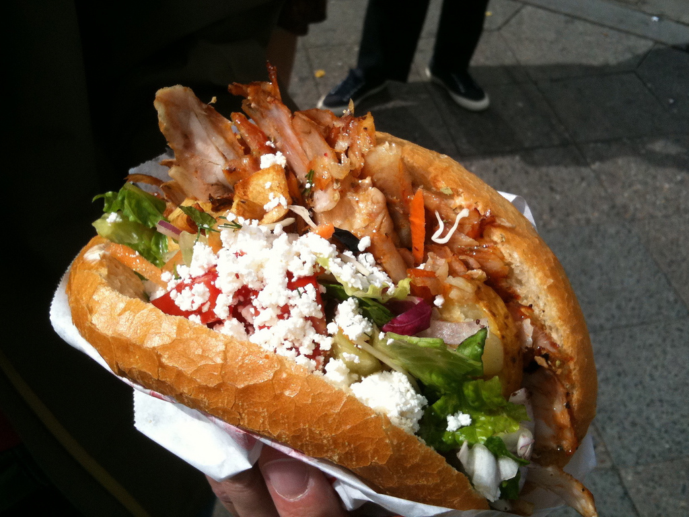

Recette pour Kebab

Cuisiner un délicieux Kebab
Recette classique d'un bon Kebab bien franchouillard et digestif
Ingrédients nécessaires
- 100g de Viande Kebab
- 1 pain Pita
- Salade ou Roquette fraîche
- Oignons Rouges
- Sauce blanche maison fraîche herbacé
Etapes
- Faire cuire la Viande
- La mettre dans le pain pita
- Mettre la roquette
- Recouvrir de sauce
- Déguster
Autres recettes